De Stelling van Pythagoras
Theorie
De stelling van Pythagoras zegt dat bij een rechte driehoek (zie Figuur 1) de twee rechte zijdes in het kwadraat samen gelijk zijn aan de schuine zijde in het kwadraat.

In formule form wordt de stelling van Pythagoras:
Belangrijk
Hieronder is er een filmpje om te laten zien waar de stelling van Pythagoras vandaan komt.
Video
Visueel bewijs van de stelling van Pythagoras
Voorbeelden
Voorbeeld 1
Voorbeeld 1
Vraag: Wat is de lengte van de schuine zijde \(c\)?
Uitwerking
We weten dat de rechte zijdes allebei een lengte van 2 hebben en dus dat \(a = 2\) en \(b = 2\). Dit kunnen we nu gaan invullen.
Voorbeeld 2
Voorbeeld 2
Vraag: Wat is de lengte van de rechte zijde \(b\)?
Net zoals bij het vorig voorbeeld beginnen we eerst met de stelling van Pythagoras opschrijven
Dan vullen we de gegevens in die we hebben. We weten dat 1 rechte zijde een lengte heeft van 3 en dat de schuine zijde een lengte heeft van 5. Oftewel \(a=3\) en \(c=5\). Laten we dit invullen:
Dit kunnen we omschrijven door aan beide kanten van het '\(=\)' teken \(-9\) te doen. We krijgen dan: